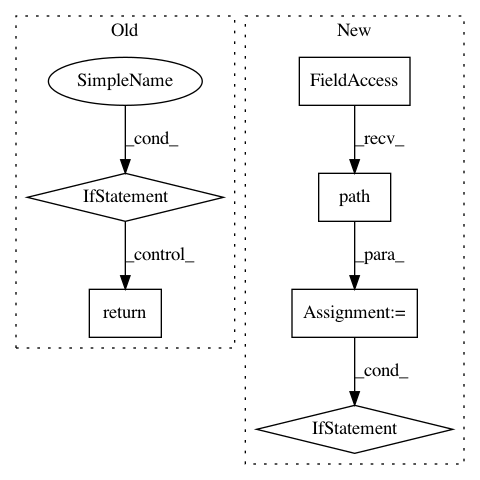

3c5e62d47eeded341b41cbe769f3e29b7b6f1614,homeassistant/components/recorder/migration.py,,migrate_schema,#Any#,9
Before Change
SchemaChanges.change_id.desc()).first()
current_version = getattr(res, "schema_version", None)
if current_version == SCHEMA_VERSION:
return
_LOGGER.debug("Database requires upgrade. Schema version: %s",
current_version)
if current_version is None:
After Change
Check if the schema needs to be upgraded.
from .models import SchemaChanges, SCHEMA_VERSION
progress_path = instance.hass.config.path(PROGRESS_FILE)
with session_scope(session=instance.get_session()) as session:
res = session.query(SchemaChanges).order_by(
SchemaChanges.change_id.desc()).first()
current_version = getattr(res, "schema_version", None)
if current_version == SCHEMA_VERSION:
// Clean up if old migration left file
if os.path.isfile(progress_path):
_LOGGER.warning("Found existing migration file, cleaning up")
os.remove(instance.hass.config.path(PROGRESS_FILE))
return
with open(progress_path, "w"):
pass
In pattern: SUPERPATTERN
Frequency: 3
Non-data size: 6
Instances
Project Name: home-assistant/home-assistant
Commit Name: 3c5e62d47eeded341b41cbe769f3e29b7b6f1614
Time: 2018-08-19
Author: paulus@paulusschoutsen.nl
File Name: homeassistant/components/recorder/migration.py
Class Name:
Method Name: migrate_schema
Project Name: home-assistant/home-assistant
Commit Name: 09d531b3b95e7943df53233d1abcb40d7e87de94
Time: 2016-08-18
Author: nkgilley@gmail.com
File Name: homeassistant/components/media_player/gpmdp.py
Class Name:
Method Name: setup_platform
Project Name: home-assistant/home-assistant
Commit Name: 9e1fa7ef42cbad0f2fe36e51651a6f1d00d31dec
Time: 2018-08-19
Author: paulus@paulusschoutsen.nl
File Name: homeassistant/components/recorder/migration.py
Class Name:
Method Name: migrate_schema